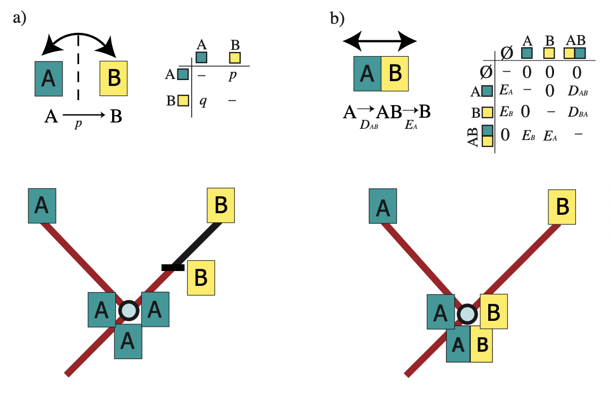
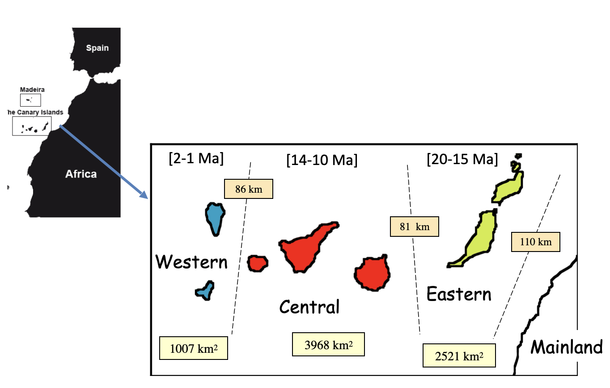
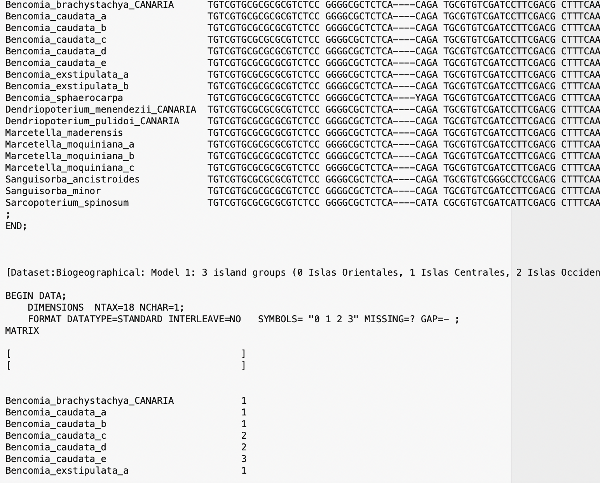

In the Introduction to phylogenetic biogeography with the DEC model tutorial, we went through the exercise of setting up the instantaneous rate matrix and cladogenetic transition probabilities for a simple DEC model. In this tutorial, we will complete a Bayesian Island Biogeography (BIB) analysis using an empirical dataset. For a good introduction to the BIB model, you can read Sanmartín et al. (2008) or this book chapter Sanmartin, 2022 ISME.
The BIB model uses MCMC sampling to estimate ancestral ranges and rates of biogeographic parameters alongside phylogenetic parameters, such as the tree topology, parameters of molecular evolution, and branch lengths; the input data are DNA sequences and tip distributions of the study species (Sanmartín et al. 2008).
Though they both use CTMC processes to model range evolution, BIB and DEC models are slightly different (). BIB (Fig. 1a) implements a simpler character evolutionary model, in which ancestors can only occupy single areas (A or B). Range evolution along branches is governed by a CTMC process with only one type of parameter equivalent to range switching or instantaneous dispersal; the Q matrix describes the instantaneous transition from one area to another as a jump dispersal event (p = A to B). At each speciation event in the phylogeny, the single-area ancestral range is inherited entirely and identically by the two descendants, in other words, there is no need to include a cladogenetic component in the BIB model because the ancestral range is not altered through speciation (Fig. 5a).

Modeling dispersal as an instantaneous process without going through a widespread state may seem unrealistic but allows the BIB model to “borrow” the sophisticated machinery and statistical algorithms used in molecular models of nucleotide substitution; in fact, initial implementations of BIB used software routinely employed in molecular phylogenetics (Sanmartín et al. 2008; Lemey et al. 2009).
In standard molecular models, nucleotide substitutions within a species DNA sequence are considered as instantaneous In-between demographic-level processes, involving increased allele polymorphism within gene trees, competition among mutations in terms of fitness, and rates of fixation differing between alleles (De Maio et al. 2015), are typically ignored. Similarly, in the BIB model, the species is assumed to instantaneously change area relative to its current range, ignoring the intermediary population-level processes, such as changes in effective population size with migration, introgression, etc.
The BIB model can thus be appropriate to model scenarios in which areas are discrete entities isolated by dispersal barriers, so that migration to a new area effectively leads to speciation, in other words, the ancestor is not expected to maintain the widespread distribution for long, as in the case of founder effects in oceanic islands isolated by geographic barriers (Sanmartín et al. 2008), or in continental islands isolated by ecological barriers (Sanmartín et al. 2010).
However, the assumption of single-state ancestral ranges means that BIB is most useful to explore and test general patterns of geographic movement or dispersal. If the interest lies on inferring speciation modes or possible ways in which ancestral ranges are divided, BIB is not well suited.
Notice that constraining ancestors to single areas in the Q matrix does not imply that phylogenies with extant widespread species cannot be analyzed with BIB. As in molecular evolutionary models, these widespread terminals will be treated as sources of “ambiguity” in the BIB analysis: 50% of the time the MCMC chain will sample from one of the discrete states, and 50% from the other.
We have provided the following data files for this tutorial:
Once you have downloaded the zip file by clicking on the arrow above, Unzip that and navigate inside of that directory. This directory should be called
revbayes_biogeo_biogeo_simpleOnce inside you should see two directories:
dataandscriptsOnce you have all of the files, open RevBayes and ensure that your working directory is the top directory above the
datafolder (e.g.,revbayes_biogeo_biogeo_simple).
In this tutorial, we are going to program a Bayesian inference biogeographic analysis in RevBayes with the BIB model and the Rev language and an empirical dataset, consisting on a set of clades that are distributed in the same set of areas As we have learnt from the lectures, the BIB model includes only two components: the Distribution-coded discrete areas and the anagenetic component: the Q matrix. There is no cladogenetic component: range inheritance scenarios. The aim is to estimate commonalities in patterns of range evolution: in particular, can we learn any rules about the rate of migration or dispersal between areas by estimating those rates across multiple clades that share a common biogeographic setting or area distribution.
We will work with a set of nine clades that are distributed in the Canary Islands, a volcanic archipelago located in the Atlantic Ocean, close to northwest Africa. These clades (genera, tribes, “generic-alliances) differ in the number of species and taxonomically (they belong to different groups of organisms: e.g., insects, angiosperms, millipeda), and have different ecological preferences; however, they share a common distribution (even though not every clade is distributed in exactly the same set of islands). The Canary Islands were formed by the African plate moving over a “hotspot” (a permanent source of magma) in the Atlantic Ocean; unlike Hawaii, another hotspot archipelago, their volcanic history was also influenced by tectonics, i.e., a continental fracture propagating from the African Atlas mountain range. All islands were formed in the last 20 million years, with the eastern islands (Lanzarote, Fuerteventua) being the oldest, and the westernmost islands (La Palma, El Hierro), the youngest.

First, download the datasets and scripts needed to complete the task.
Move into the BIB folder, where you can find all scripts and files needed for the practice. Inside this folder, you will find a second folder called data. Copy the contents of this file into your computer: it contains the datasets of the seven clades, e.g., Bystropogon.nex .
Take a look at each of these datasets. You will note that unlike DEC, BIB works with raw DNA sequence alignment. This means that we will be inferring the phylogeny, the evolutionary relationships between species, jointly with patterns and rates of range evolution. There are two components on each dataset: the first matrix contains the DNA alignment and the character states are the nucleotides (e.g., A, C, T, G). The second matrix contains the biogeographic states: only one column with each species (or DNA sequence voucher) coded by distribution.

Area coding follows Sanmartín et al. (2008), and divides the Canary Islands into three “geological” groups of islands (islands that were formed in the same geological pulses over the last 20 million years: Eastern Islands (1): Lanzarote (15 Ma) and Fuerteventura (20 Ma), Central Islands (2): Gran Canaria (14 Ma), Tenerife (12 Ma) and Gomera (10 Ma), and Western Islands (3): La Palma (2 Ma) and El Hierro (0.8 Ma). Finally, we will consider a fourth state to allow lineages to migrate into the Canary Islands, Mainland (0): Iberian Peninsula, other Macaronesian archipelagos, Africa.
Launch RevBayes by typing ./rb if your are using the Terminal, or rb-mpi if you are using the parallel version in a cluster command line. This should launch RevBayes and give you a command prompt (the > character); this means RevBayes is waiting for input.
First, we will build the molecular part of the model.
We assume each group has its own molecular model, but shares the biogeographic model.
Read in all molecular data matrices into the vector D Read in all biogeographic matrices into the vector B
filenames <- [ "Input/Bystropogon.nex",
"Input/Calathus.nex",
"Input/Dolichoiulus.nex",
"Input/Lotus.nex",
"Input/Micromeria.nex",
"Input/Pimelia.nex",
"Input/Psyllids.nex"
]
Create a loop
for ( i in 1:filenames.size() )
{
X <- readDiscreteCharacterData( filenames[i] )
D[i] <- X[1]
B[i] <- X[2]
}
Next, we define the molecular model for each group. We do it in a loop with four steps:
Define the priors for the two elements of the Q substitution rate matrix: the exchangeability or transition rates between nucleotides r_M and the stationary or equilibrium frequencies for each nucleotide p_M. Since these two parameters are stochastic variables in our model, we assign them some priors: in this case, Dirichlet priors.
p[i] ~ dnDirichlet( v(1,1,1,1) )
r[i] ~ dnDirichlet( v(1,1,1,1,1,1) )
seq from all seven components.
for ( i in 1:D.size() ) {
pi_M[i] ~ dnDirichlet( v(1,1,1,1) )
r_M[i] ~ dnDirichlet( v(1,1,1,1,1,1) )
Q_M[i] := fnGTR( r_M[i], pi_M[i] )
clockRate_M[i] ~ dnExponential( 1000.0 )
diversification[i] ~ dnExponential( 1.0 )
turnover[i] ~ dnUniform(0.000001,0.999999)
lambda[i] := diversification[i] / abs(1.0 - turnover[i])
mu[i] := turnover[i] * lambda
rootAge[i] ~ dnUniform( 0.000001, 20.0 )
tau[i] ~ dnBirthDeath( lambda = lambda[i],
mu = mu[i],
rootAge = rootAge[i],
rho = 1.0,
samplingStrategy = "uniform",
condition = "time",
nTaxa = D[i].ntaxa(),
names = D[i].names()
)
alpha_M[i] ~ dnExponential(1.0)
probs <- v( 0.125, 0.375, 0.625, 0.875 )
for ( j in 1:4 )
siteRates_M[i][j] := qgamma( probs[j], alpha_M[i], alpha_M[i] )
seq_M[i] ~ dnPhyloCTMC( tree = tau[i],
Q = Q_M[i],
branchRates = clockRate_M[i],
siteRates = siteRates_M[i],
nSites = D[i].nchar(),
type = "DNA"
)
seq_M[i].clamp( D[i] )
# add moves
moves[ mvi++ ] = mvScale(clockRate_M[i],lambda=1,tune=true,weight=1)
moves[ mvi++ ] = mvScale(rootAge[i],lambda=1,tune=true,weight=1)
moves[ mvi++ ] = mvScale(diversification[i],lambda=1,tune=true,weight=1)
moves[ mvi++ ] = mvScale(turnover[i],lambda=1,tune=true,weight=1)
moves[ mvi++ ] = mvNNI(tau[i], weight=10.0)
moves[ mvi++ ] = mvFNPR(tau[i], weight=10.0)
moves[ mvi++ ] = mvSubtreeScale(tau[i], weight=5.0)
moves[ mvi++ ] = mvNodeTimeSlideUniform(tau[i], weight=10.0)
moves[ mvi ] = mvScale(alpha_M[i], lambda=1, tune=true, weight=1.0)
}
We assume the following state codes (0-offset in Nexus file, 1-offset here) 0 1 Eastern Islands (Fuerteventura, Lanzarote) 1 2 Central Islands (Tenerife, Gran Canaria, Gomera) 2 3 Western Islands (El Hierro, La Palma) 3 4 Mainland
We first define the island carrying capacities and biotic exchange intensities
pi_bio ~ dnDirichlet( v(1,1,1,1) )
r_bio ~ dnDirichlet( v(1,1,1,1,1,1) )
Next, we build the biogeographic rate matrix, which is a deterministic node, a function of two parameters (r and pi)
Q_bio := fnGTR( r_bio, pi_bio )
We now use a loop to define the components of the biogeographic model for each clade.
mvi = 1
mni = 1
for ( i in 1:B.size() ) {
migrationRates[i] ~ dnGamma( 1.0, 1.0 )
# Biogeography model, assuming that tau is in time units
bio[i] ~ dnPhyloCTMC( tree = tau[i],
Q = Q_bio,
rootFrequencies = pi_bio,
branchRates = migrationRates[i],
nSites = 1,
type = "Standard"
)
bio[i].clamp( B[i] )
mymodel = model( bio )
moves[ mvi++ ] = mvSimplexElementScale(pi_bio, alpha=10.0, tune=true, weight=4.0)
moves[ mvi++ ] = mvSimplexElementScale(r_bio, alpha=10.0, tune=true, weight=6.0)
moves[ mvi] = mvScale(migrationRates[i],lambda=1,tune=true,weight=1)
runName <- "biogeo_model"
monitors[mni++] = mnModel(
filename = runName + ".csv",
printgen = 10
)
monitors[mni++] = mnScreen(
printgen = 10,
pi_bio,
r_bio,
migrationRates,
posterior = true,
likelihood = true,
prior = true
)
}
Finally, we run the analysis
mymcmc = mcmc( mymodel, monitors, moves )
mymcmc.run( generations=100000 )
First, we run the molecular model. This script will set up the molecular model we described above.
source("Molecular_model.Rev")
Second, we run the biogeographic model. This script will set up the biogeographic model we described above, and run the analysis.
source("biogeo_model.Rev")
Open Tracer to visualize the results and summarize the posterior probabilities for the parameters in the biogeographic model: dispersal rates between the island groups, and between these and the mainland, and the carrying capacities for each island-group and the Mainland. Assess the behaviour of the MCMC by checking for stationarity (after the burnin) and appropriate ESS values (> 200). Compare the posterior probabililies of the six rates and the four stationary frequencies (you can use the “marginal density” button or the “estimates” button. OBS: Here, p1 is p for the Eastern Islands, p2, the Central Islands, p3, the Western Islands, and p4, the Mainland. The rates are numbered by their position in the Q matrix: r1 (EI <> CI), r2 (EI <> WI), r3 (EI <> M), r4 (CI <> WI), r5 (CI <> M), r6 (WI <> M).